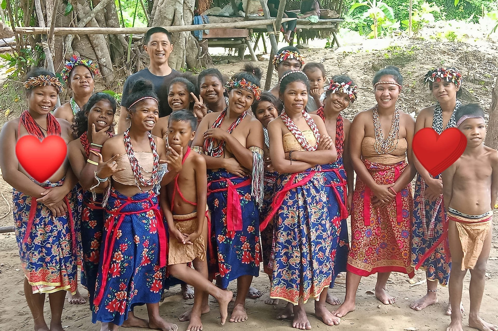
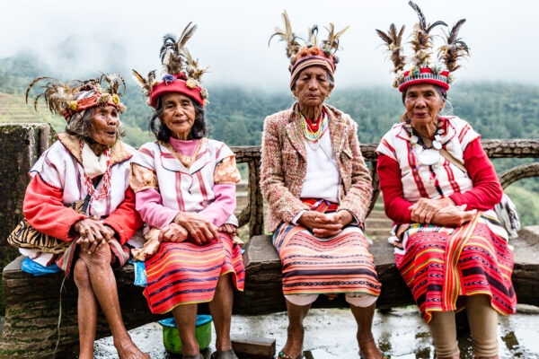
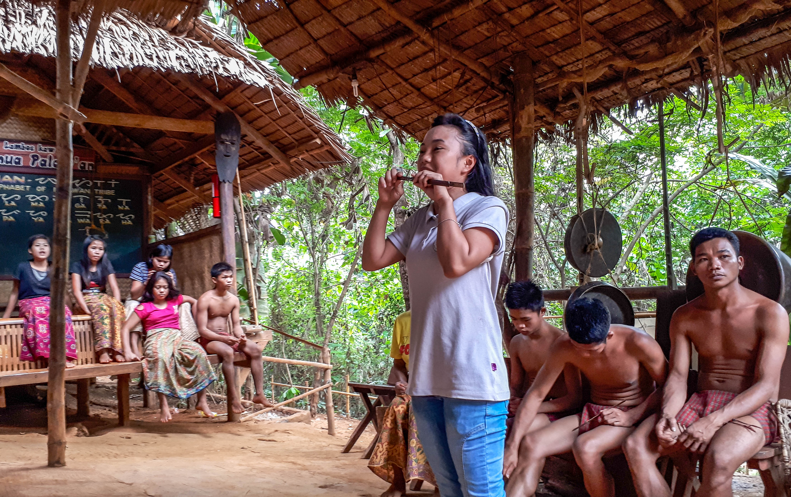

Indigenous People

Batak
Among the most ancient inhabitants of northern Palawan. Semi-nomadic forest dwellers who practice swidden agriculture and are renowned for their honey gathering and forest knowledge.

Tagbanua
Skilled seafarers and farmers inhabiting central Palawan. They maintain the Tagbanua script — one of only three pre-colonial Philippine scripts still in use today.

Palaw'an
Mountain people of southern Palawan with rich oral traditions. Their tultul chanted epic poetry is inscribed on UNESCO's Intangible Cultural Heritage list.